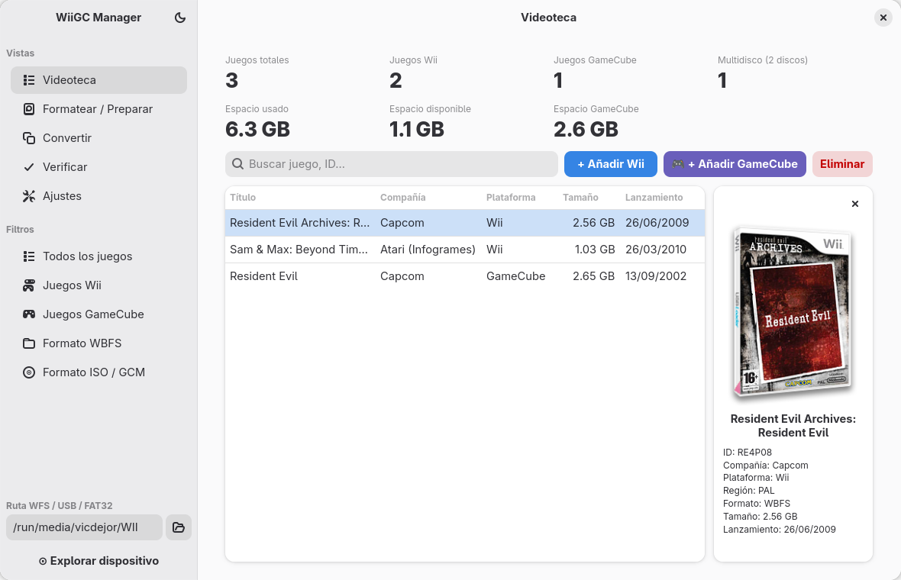
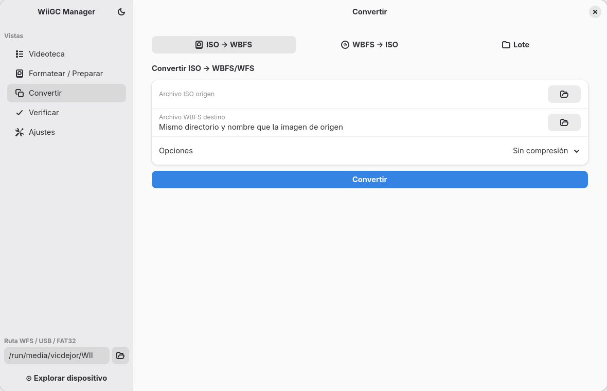

WiiGC Manager — Manual de uso
WiiGC Manager gestiona la colección de juegos de Wii y GameCube de una unidad USB o tarjeta SD: los añade, elimina, convierte, verifica y copia a otra unidad, y prepara la unidad para usarla en la consola con WiiFlow, USB Loader GX y Nintendont.
Este manual describe la aplicación de escritorio (GTK4, versión 1.9.0). La versión web original, que comparte el mismo motor, se resume al final.

1. Requisitos e instalación
Qué hace falta
| Componente | Para qué | Obligatorio |
|---|---|---|
| Linux con GTK 4 y libadwaita | La interfaz | Sí |
| Python 3.8 o posterior, con PyGObject | Ejecutar la app | Sí |
wit y wwt (Wiimms ISO Tools) | Leer, copiar, convertir y verificar juegos de Wii | Sí |
Dolphin (dolphin-tool) | Añadir imágenes RVZ o GCZ | Solo para esos formatos |
| Conexión a internet | Carátulas, compañía y fecha de lanzamiento, descarga de cargadores | No |
En Fedora, la parte gráfica se instala con:
sudo dnf install python3-gobject gtk4 libadwaitawit y wwt se descargan de wit.wiimm.de/download.html y deben quedar en el PATH (por ejemplo, en /usr/local/bin). Dolphin puede ser el del sistema o el Flatpak org.DolphinEmu.dolphin-emu.
Ejecutar desde el código fuente
git clone https://github.com/vjorgemol/WiiGC-Manager.git
cd WiiGC-Manager
./run-gtk.shInstalar como Flatpak
cd WiiGC-Manager/flatpak
./build.sh
flatpak install --user WiiGC-Manager.flatpakDespués aparece como WiiGC Manager en el menú de aplicaciones. El Flatpak usa el wit, el wwt y el Dolphin instalados en el sistema: no los incluye.
Ejecutar como AppImage
Un único archivo ejecutable, sin instalación, para Ubuntu 24.04 o posterior y Fedora 40 o posterior (x86_64). Lleva dentro Python, GTK4, libadwaita y GStreamer, así que no hay que instalar ninguna de esas dependencias.
cd WiiGC-Manager/appimage
./build.sh
./WiiGC-Manager-x86_64.AppImagebuild.sh necesita podman o docker, y conexión a internet. Igual que el Flatpak, la AppImage usa el wit, el wwt y el Dolphin instalados en el sistema: no los incluye.
2. Primeros pasos
Con una unidad ya preparada
- Conecta la unidad USB o la tarjeta SD. Si es FAT32 o NTFS, deja que el sistema la monte.
- Abre WiiGC Manager. Si hay una sola unidad USB conectada, la app la detecta, escribe su ruta en el panel lateral y muestra sus juegos en la Videoteca.
- Si no la detecta (hay varias unidades, o la unidad tiene varias particiones), escribe la ruta en Ruta WFS / USB / FAT32 o elígela con el botón de la carpeta, y pulsa Explorar dispositivo.
Con una unidad nueva
- Ve a Formatear / Preparar, selecciona la unidad y formatéala como FAT32 con las carpetas creadas (apartado 6).
- En la misma página, instala los cargadores que vayas a usar.
- Vuelve a Videoteca y añade juegos con + Añadir Wii y + Añadir GameCube.
Qué ruta poner
| Tipo de unidad | Ruta | Ejemplo |
|---|---|---|
| FAT32 o NTFS montada | Su punto de montaje | /run/media/usuario/WII |
| Partición WBFS | El dispositivo | /dev/sdb1 |
| Sin ruta | La detecta wwt (solo particiones WBFS) | — |
Cómo se guardan los juegos
En una unidad FAT32 o NTFS, la app usa la estructura que esperan los cargadores:
/wbfs/Título del juego [ID]/ID.wbfs juegos de Wii
/games/Título del juego [ID]/game.iso juegos de GameCube
/games/Título del juego [ID]/disc2.iso segundo disco, si lo hay
/apps/ cargadores (WiiFlow, USB Loader GX, Nintendont)Los juegos de Wii de más de 4 GB se parten automáticamente en varios archivos, porque FAT32 no admite archivos mayores.
Una partición WBFS solo admite juegos de Wii y no se monta: se gestiona entera con wwt.
3. La ventana
- Panel lateral, arriba: las siete vistas (Videoteca, Homebrew, Formatear / Preparar, Convertir, Migrar, Verificar, Ajustes). En la Videoteca aparecen además los Filtros y, en Homebrew, las Categorías.
- Panel lateral, abajo: la ruta de la unidad con la que se trabaja y el botón Explorar dispositivo. Todas las vistas usan esa unidad.
- Cabecera: el botón de información abre «Acerca de» (versión y novedades); el del sol o la luna cambia entre tema claro y oscuro.
- Terminal: un panel inferior opcional con los comandos ejecutados y su salida. Se activa en Ajustes → Mostrar terminal de resultados. Es el primer sitio donde mirar cuando algo falla.
En ventanas estrechas, el panel lateral se pliega y se navega entre él y el contenido.
La app es de instancia única: si ya está abierta, lanzarla otra vez solo trae su ventana al frente.
Si cierras la ventana mientras se copia o elimina un juego, o mientras se descarga homebrew, la app avisa antes: cerrar interrumpe la operación y el juego queda incompleto.
4. Videoteca
Indicadores
Arriba se muestran los juegos totales, los de Wii, los de GameCube y los multidisco, y debajo el espacio usado, el disponible y el que ocupan los juegos de GameCube.
Tabla de juegos
Cada fila muestra título, compañía, plataforma, tamaño y fecha de lanzamiento. La compañía y la fecha vienen de GameTDB; sin conexión, esas columnas quedan vacías.
- Ordenar: clic en la cabecera de una columna.
- Buscar: escribe parte del título o del ID en el campo de búsqueda.
- Filtrar: en el panel lateral, por plataforma (Wii, GameCube) o por formato (WBFS, ISO / GCM).
- Seleccionar varios: Ctrl + clic o Mayús + clic.
Panel de detalle
Al seleccionar un juego se abre a la derecha su ficha: carátula, ID, compañía, plataforma, región, formato, tamaño, lanzamiento y número de discos. Con varios juegos seleccionados muestra el total que ocupan y la lista de títulos.
Añadir juegos
Explora antes la unidad de destino. Luego:
- + Añadir Wii admite
.iso,.wbfs,.wdf,.rvzy.gcz. - + Añadir GameCube admite
.iso,.gcm,.ciso,.rvzy.gcz.
La app comprueba la imagen, muestra su título, ID, región y tamaño, y la copia a la unidad. Una copia puede tardar varios minutos: la fila de estado muestra el avance. No desconectes la unidad hasta que termine.
Detalles útiles:
- Las imágenes RVZ y GCZ se convierten antes a ISO con Dolphin, porque ni los cargadores ni
witlas leen. - En los juegos de GameCube, el número de disco se lee de la propia imagen. Si el juego tiene dos discos, la app avisa de que falta el otro.
- Si el juego de Wii ya está en la unidad, no se vuelve a copiar.
- Solo se hace una operación de escritura a la vez: mientras dura, los botones de añadir, copiar, extraer y eliminar quedan desactivados.
Eliminar juegos
Selecciona uno o varios y pulsa Eliminar o la tecla Supr. La app pide confirmación e indica cuánto espacio se libera. No se puede deshacer.
Copiar a otra unidad
Selecciona los juegos y pulsa Copiar a…. Elige la unidad de destino en el desplegable y confirma.
- Los juegos que ya están en el destino se omiten.
- Los de GameCube no se pueden copiar a una partición WBFS.
- Cancelar detiene la copia y descarta el juego que estaba a medias; los ya copiados se conservan.
Para copiar toda la colección, usa Migrar.
Extraer al PC
Selecciona los juegos y pulsa Extraer… para guardar una copia en una carpeta del PC. Los juegos siguen en la unidad.
- Para los juegos de Wii se elige el formato: ISO (imagen completa del disco) o WBFS (solo los datos usados, ocupa menos). El archivo se llama «Título [ID].iso» o «.wbfs».
- Los de GameCube se copian tal cual, en una carpeta con el mismo nombre que tienen en la unidad.
- No se sobrescribe nada: lo que ya exista en la carpeta se omite.
- Cancelar detiene la extracción y descarta el juego que estaba a medias; los ya extraídos se conservan.
Jugar en Dolphin
Doble clic sobre un juego (o Intro) lo abre en el emulador Dolphin, tras pedir confirmación. Hace falta tener Dolphin instalado, del sistema o como Flatpak.
- Dolphin lee el juego directamente de la unidad: no la desconectes mientras juegas.
- Solo funciona con unidades montadas (FAT32/NTFS). Dolphin no puede leer una partición WBFS: extrae antes el juego al PC con Extraer….
- Dolphin se cierra solo al terminar la partida y sigue abierto aunque cierres la app.
Sonido del juego
Al seleccionar un juego de Wii suena su banner: el sonido que se oye en el menú de la consola al elegir el disco. El botón del altavoz, arriba en el panel del juego, lo activa o lo desactiva, y la app recuerda la elección.
- El sonido se lee del propio juego la primera vez y se guarda en
~/.cache/wii-manager-gtk/banners/. - Los juegos de GameCube no tienen sonido de banner. En su lugar suena el archivo de audio que elijas en Ajustes → Sonido de arranque de GameCube (por ejemplo, una grabación del arranque de la consola); la app no incluye ninguno.
- Mientras hay una operación en curso (añadir, copiar, extraer, eliminar) no suena.
Carátulas
La carátula se descarga de GameTDB al seleccionar el juego, con la región y el tipo elegidos en Ajustes. Si no existe esa combinación, la app prueba con otras regiones y tipos.
Con el tipo Disco, la imagen del disco gira mientras el juego está seleccionado (salvo que el sistema tenga las animaciones desactivadas).
Con el tipo Banner animado (Wii), en lugar de una carátula de GameTDB se muestra la animación que tiene el juego en el menú de la consola, leída del propio juego (y guardada en ~/.cache/wii-manager-gtk/banners/).
- Es una reproducción aproximada: se dibujan las imágenes con su movimiento, color y transparencia, pero no los textos ni algunos efectos, así que en ciertos juegos puede verse incompleta o con algún recuadro de más.
- Los logotipos traducidos se muestran en español si el juego lo trae y, si no, en inglés.
- Los juegos de GameCube no tienen banner animado: se muestra la carátula 3D de GameTDB, que también hace de reserva si el banner no se puede leer.
- El banner no se puede guardar ni imprimir con doble clic.
Doble clic en la carátula permite:
- Guardar…: la guarda como PNG.
- Imprimir…: imprime la carátula completa (portada, lomo y contraportada) a 273 × 183 mm, el tamaño de una funda de DVD, apaisada y con marcas de corte. Si la hoja es más pequeña, se reduce y se avisa.
5. Homebrew
Muestra el catálogo de la Open Shop Channel, la biblioteca de aplicaciones caseras para Wii, y descarga las que elijas en la unidad explorada. Quedan en la carpeta apps/, de donde las lee el Homebrew Channel de la consola.
Indicadores
Arriba se muestran las apps del catálogo, las que ya están en la unidad, las que tienen una versión más nueva y el espacio disponible.
Tabla de apps
Cada fila muestra nombre, categoría, versión, tamaño que ocupa en la unidad y, en la columna En la unidad, si está instalada o se puede actualizar.
- Ordenar: clic en la cabecera de una columna.
- Buscar: escribe parte del nombre o del autor en el campo de búsqueda.
- Filtrar: en el panel lateral, por las mismas categorías que la web: Utilidades, Emuladores, Juegos, Multimedia y Demos.
- Seleccionar varias: Ctrl + clic o Mayús + clic. El botón Seleccionar todo (o Ctrl + A) marca todas las de la lista, con el filtro y la búsqueda aplicados.
- Recargar: el botón de las flechas vuelve a descargar el catálogo, que se guarda en el PC y se renueva solo cada 6 horas.
Panel de detalle
Al seleccionar una app se abre a la derecha su ficha: icono, descripción, autor, categoría, versión, fecha de publicación, tamaño, mandos y consolas compatibles y la carpeta en la que se instala. Con varias seleccionadas muestra el total que ocupan y la lista de nombres.
⚠ Algunas apps pueden escribir en la memoria interna de la consola (NAND) y otras están obsoletas: la ficha lo advierte. Úsalas con cuidado.
Descargar en la unidad
- Selecciona una o varias apps.
- Pulsa Descargar en la unidad, o haz doble clic sobre una app, y confirma.
- Las que ya están en la unidad en su última versión se omiten; las que tienen una versión más nueva se actualizan.
- Cada descarga se comprueba antes de copiarla. Si una falla, se sigue con las demás y el error queda en el terminal.
- La fila de estado muestra el avance y un botón Cancelar: las apps ya descargadas se quedan en la unidad.
- Para descargar el catálogo entero hacen falta alrededor de 1,3 GB libres.
Necesita conexión a internet y una unidad montada (FAT32): no funciona sobre una partición WBFS. Para usar las apps, la consola tiene que tener instalado el Homebrew Channel.
6. Formatear / Preparar
⚠ El formateo borra todo el contenido de la unidad o partición elegida.
Formatear
- Seleccionar unidad o partición. La lista solo muestra unidades ajenas al sistema: los discos donde está instalado Linux no aparecen y no se pueden formatear. Pulsa Actualizar unidades si acabas de conectar la tuya.
- Sistema de archivos y estructura.
En FAT32 puedes elegir la etiqueta del volumen (por defecto,
Opción Cuándo usarla FAT32 (recomendado) Wii y GameCube en la misma unidad WBFS puro Solo Wii, en una partición gestionada por wwtWII) y crear las carpetas/wbfs,/games,/appsy/wiiflow, junto con un archivoLEEME_WIIFLOW.txtque explica dónde va cada cosa. - Ejecutar. Pulsa Formatear y preparar unidad seleccionada y confirma.
Si tu usuario no tiene permiso sobre el dispositivo, el sistema pide la contraseña de administrador. Al terminar, la unidad queda montada y la Videoteca pasa a mostrarla.
Instalar o actualizar cargadores
La sección 4 · Instalar o actualizar cargadores descarga Nintendont, WiiFlow Lite y USB Loader GX en la unidad explorada, sin formatear ni borrar nada.
- Cada fila indica si el cargador está instalado, qué versión tiene y si hay una más nueva.
- Desmarca los que no quieras y pulsa Instalar / actualizar en la unidad.
- Los que ya están en su última versión se dejan como están.
Necesita conexión a internet y una unidad montada (FAT32): no funciona sobre una partición WBFS.
7. Convertir

Convierte imágenes de Wii entre formatos, sin tocar la unidad. Tiene tres pestañas; solo se hace una conversión a la vez.
ISO → WBFS
- Elige la imagen de origen.
- Elige el archivo de destino, o déjalo vacío para crearlo junto al origen con el mismo nombre.
- En Opciones, elige Split en varios archivos si el destino es FAT32 y el juego supera los 4 GB. Las otras dos opciones hacen una conversión normal.
- Pulsa Convertir.
WBFS → ISO
Igual que la anterior, con estas opciones de salida:
| Opción | Resultado |
|---|---|
| ISO estándar | Un archivo .iso |
| WBFS en lugar de ISO | Un archivo .wbfs |
| ISO partida (FAT32) | Una ISO en trozos de menos de 4 GB |
Lote
Convierte a WBFS todos los .iso de una carpeta. Cada uno conserva su nombre, en la carpeta de destino o, si no eliges ninguna, junto al propio ISO. Los que ya tienen su .wbfs se saltan y aparecen como error en el resumen.
La app nunca sobrescribe un destino sin que lo hayas elegido tú: si el archivo por defecto ya existe, pide otro.
8. Migrar
Copia todos los juegos de una unidad a otra; por ejemplo, al pasar a un disco de más capacidad.
- Conecta las dos unidades. Las FAT32 y NTFS tienen que estar montadas.
- Elige la unidad de origen y la unidad de destino. Por defecto, el origen es la unidad explorada.
- Lee el resumen: cuántos juegos hay por copiar y cuánto ocupan, cuántos ya están en el destino y cuánto espacio libre queda. Si no caben, el botón Migrar queda desactivado.
- Opcional: activa Eliminar del origen los juegos migrados. Solo se eliminan los copiados correctamente, una vez terminada toda la copia, y nunca si cancelas. La app pide confirmación.
- Pulsa Migrar.
Durante la migración se muestra el juego en curso y el avance global. Cancelar descarta el juego que se estaba copiando y conserva los anteriores. Puedes repetir la migración más tarde: solo se copia lo que falte.
Los juegos de GameCube no se pueden migrar a una partición WBFS; el resumen indica cuántos quedan fuera.
9. Verificar
Comprueba que las imágenes no están dañadas.
- Un juego de la unidad: elígelo en el desplegable y pulsa Verificar.
- Un archivo suelto: elige Otro archivo (ISO / WBFS / GCM)…, selecciona el archivo y pulsa Verificar.
- Toda la unidad: pulsa Verificar todos.
Cada resultado lleva una etiqueta:
| Etiqueta | Significado |
|---|---|
| OK | La imagen es correcta |
| ERR | La imagen está dañada o modificada |
| N/D | No se ha podido comprobar |
Cómo se verifica cada plataforma:
- Wii: los discos llevan sus propias sumas de comprobación, que
witywwtrecalculan. - GameCube: los discos no las llevan. La app calcula el SHA1 de la imagen y lo compara con los volcados conocidos que publica GameTDB.
Por eso un juego de GameCube sale como N/D en dos casos: GameTDB no tiene sumas de ese juego, o la imagen es un CISO (compactada), que nunca coincide con el volcado original. Solo se pueden verificar las ISO o GCM completas.
Verificar lee la imagen entera: cuenta con varios minutos por juego en una unidad USB.
10. Ajustes
| Ajuste | Efecto |
|---|---|
| Mostrar terminal de resultados | Abre el panel inferior con los comandos y su salida. Se aplica al instante. |
| Ruta de wit / Ruta de wwt | Detectar muestra dónde están instaladas. La app localiza las herramientas en el PATH por su cuenta, así que sirve para comprobar que están disponibles. |
| Ruta WFS / USB | Unidad que aparece en el panel lateral al abrir la app. |
| Región preferida | Región de la carátula que se pide primero. |
| Tipo de carátula | 3D, plana, disco, completa o banner animado (solo Wii). |
| Sonido de arranque de GameCube | Archivo de audio que suena al seleccionar un juego de GameCube. La app no lo incluye: hay que elegir uno propio. |
Las rutas se guardan con Guardar. La región, el tipo de carátula y el sonido de GameCube se aplican al cambiarlos.
Los ajustes se guardan en ~/.config/wii-manager-gtk/settings.json.
11. Solución de problemas
- La app no detecta la unidad
- La autodetección solo actúa cuando hay exactamente una unidad USB con una sola partición utilizable. En otro caso, indica la ruta a mano. Una unidad FAT32 o NTFS sin montar no se puede explorar: móntala desde Archivos.
- «No se puede leer /dev/sdX» en una partición WBFS
- Tu usuario no tiene permiso sobre el dispositivo. Añádelo al grupo
disky vuelve a iniciar sesión:sudo usermod -aG disk $USER - No encuentra
witowwt - Comprueba en Ajustes, con Detectar, que están instalados. Si no aparecen, instálalos y asegúrate de que están en el
PATH. - No puedo añadir un RVZ o un GCZ
- Hace falta Dolphin: instálalo desde Software o con
flatpak install org.DolphinEmu.dolphin-emu. - No aparecen carátulas, compañías ni fechas
- Vienen de GameTDB y necesitan conexión. Si un juego no tiene carátula, la app lo recuerda una semana antes de volver a preguntar.
- «No caben en el destino»
- El destino no tiene espacio para lo que falta por copiar. Libera espacio o copia menos juegos con Copiar a… desde la Videoteca.
- Un juego de GameCube no se copia a la otra unidad
- El destino es una partición WBFS, que solo admite juegos de Wii.
- La barra de progreso no muestra porcentaje
- En algunas unidades no se puede medir el avance; la barra indica solo que la operación sigue en curso.
- Algo ha fallado y el mensaje no basta
- Activa el terminal de resultados en Ajustes y repite la operación: verás el comando exacto y lo que respondió.
12. Versión web
La versión original funciona en el navegador y gestiona juegos de Wii y GameCube con el mismo motor. No incluye Migrar ni Copiar a….
./launch.sh # arranca el servidor y abre el navegador
./launch.sh --status # indica si el servidor está en marcha
./launch.sh --log # muestra el registro del servidor
./launch.sh --restart # lo reinicia
./launch.sh --stop # lo detieneLa interfaz queda en http://localhost:8765 y solo es accesible desde el propio equipo. El archivo README.md describe su API.
13. Referencia
Formatos admitidos
| Formato | Wii | GameCube | Notas |
|---|---|---|---|
.iso | Sí | Sí | |
.wbfs | Sí | — | El que usan los cargadores de Wii |
.wdf | Sí | — | |
.gcm | — | Sí | |
.ciso | — | Sí | No se puede verificar |
.rvz, .gcz | Sí | Sí | Requieren Dolphin; se convierten a ISO al añadirlos |
Archivos que usa la app
| Ruta | Contenido |
|---|---|
~/.config/wii-manager-gtk/settings.json | Ajustes |
~/.cache/wii-manager-gtk/covers/ | Carátulas descargadas |
~/.cache/wii-manager-gtk/gametdb.json | Base de datos de GameTDB (se renueva cada 30 días) |
~/.cache/wii-manager-gtk/oscwii/ | Catálogo de homebrew de oscwii.org (se renueva cada 6 horas) e iconos de las apps |
~/.cache/wii-manager/tmp/ | ISO temporales de las conversiones RVZ/GCZ |
Borrar la carpeta ~/.cache/wii-manager-gtk/ es seguro: la app vuelve a descargar lo que necesite.
Atajos
| Acción | Atajo |
|---|---|
| Eliminar los juegos seleccionados | Supr |
| Seleccionar varios juegos | Ctrl + clic, Mayús + clic |
| Seleccionar todas las apps de Homebrew | Ctrl + A |
| Descargar la app de Homebrew | Doble clic o Intro |
| Explorar la ruta escrita | Intro en el campo de ruta |
| Guardar o imprimir la carátula | Doble clic en la carátula |